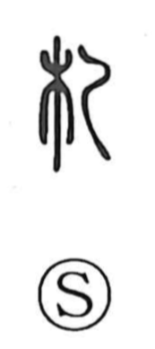

札

Uncategorized
Kun: fuda | On: satsu
tag ・ tally ・ document ・ writing
Explanation
札 is formed by combining 木, “wood,” with a graphic element depicting a thin, flattened slat. The slat form was not used independently; with 木 added to show the material, it yields the image of a narrow wooden tag. From such wooden tags on which characters were written, the character naturally came to mean a written piece or document. Because these slats could be scraped clean and reused, the office in charge of drafting and preparing texts was evocatively called the “knife-and-brush officials,” alluding to the pairing of scraping with a knife and writing with a brush.